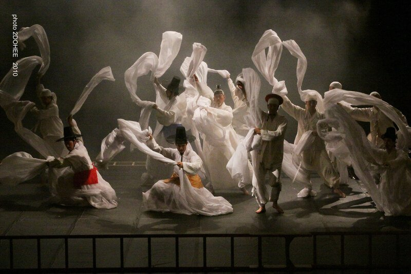

Should Shakespeare be 'changed' for modern audiences? This question has become increasingly important in discussions surrounding race, colonialism, gender, and representation in classical literature. The Tempest in particular continues to feel uncomfortable to many modern audiences.
This essay argues that The Tempest should not simply be 'changed' in order to avoid uncomfortable themes. Instead, modern audiences should engage critically with the play through close reading, reinterpretation, and performance.
Although Shakespeare wrote the play more than four hundred years ago, relationships of domination, servitude, racialised otherness, and power still remain deeply visible within the text. In particular, Prospero's treatment of Caliban often resembles a form of colonial control, while the play's representation of beauty, civilisation, and morality can also feel troubling from modern perspectives. Because of these tensions, The Tempest has become an important text within discussions surrounding colonialism, race, gender, and reinterpretation.
Some critics argue that Shakespeare's works contain problematic ideas that should be challenged or reconsidered, while others believe these tensions should be critically examined rather than removed. The essay will first examine how Prospero exercises authority over Ariel and Caliban through fear, punishment, and conditional freedom. It will then explore Caliban as a complex figure of resistance, dispossession, and moral ambiguity. The essay will also consider how Miranda reflects both colonial attitudes and patriarchal ideals surrounding beauty, virtue, and obedience. Finally, it will examine how modern reinterpretations — particularly Oh Tae-suk's Korean adaptation of The Tempest — reshape Shakespeare through different cultural, historical, linguistic, and theatrical contexts. This essay therefore suggests that reinterpretation is not an exception to Shakespearean performance, but one of the reasons Shakespeare continues to survive across different cultures and historical periods.
1 Colonial Power and Prospero
When The Tempest is read from a modern postcolonial perspective, many uncomfortable moments emerge throughout the play. In particular, Prospero's treatment of Ariel and Caliban reveals the violence and control behind his authority. Rather than ruling only through wisdom, knowledge, or moral superiority, Prospero often maintains power through fear, punishment, emotional pressure, and the promise of conditional freedom. Because of this, modern postcolonial critics challenge older interpretations that present Prospero as a purely wise and benevolent figure.
Prospero's relationship with Ariel already demonstrates the controlling nature of his authority. Although Prospero presents himself as Ariel's rescuer, his treatment of Ariel is not based on equality or friendship. When Ariel asks for the liberty that Prospero promised him, Prospero immediately reminds him of the 'torment' from which he rescued him. Ariel's gratitude is repeatedly used to justify his continued service. In this sense, Prospero's authority over Ariel depends not only on magic, but also on memory, obligation, guilt, and fear. The threatening nature of this relationship becomes even clearer when Ariel continues to ask for freedom. Prospero responds with violent intimidation:
If thou more murmur'st, I will rend an oak
And peg thee in his knotty entrails till
Thou hast howled away twelve winters. (The Tempest, I.2.192)
This image of Ariel trapped inside the oak recalls the very punishment from which Prospero claims to have rescued him. Prospero therefore uses Ariel's former imprisonment as a threat that he could repeat at any moment. Ariel immediately apologises and promises to obey 'gently', revealing that his obedience is maintained through intimidation rather than genuine loyalty.
Although Prospero speaks to Ariel more gently than he speaks to Caliban, his authority still relies on coercion. He secures obedience by combining threats with promises of future liberation, repeatedly postponing Ariel's freedom while continuing to demand service. This makes Ariel's final release significant but also ironic. At the end of the play, Prospero eventually grants Ariel freedom, but only after Ariel has completely fulfilled Prospero's commands. Ariel is rewarded because he remains obedient, useful, refined, and loyal to Prospero's plans. This creates an important contrast with Caliban. Ariel is spiritual, invisible, compliant, and associated with harmony, whereas Caliban is bodily, resistant, grotesque, and associated with physical labour. Prospero's mercy therefore appears selective: he frees the servant who conforms to his authority, while Caliban's position remains far more unresolved (The Tempest, V.1.305–06).
This violence becomes even clearer in Prospero's treatment of Caliban. Throughout the play, Prospero repeatedly abuses and dehumanises him through language, calling him a 'poisonous slave', 'hag-seed', 'devil' and even 'thou earth' (The Tempest, I.2.194–97). These insults reduce Caliban to something less than fully human, associating him with dirt, evil, savagery, and monstrosity. Prospero's authority over Caliban is also maintained through open threats of violence and physical punishment:
If thou neglect'st, or dost unwillingly
What I command, I'll rack thee with old cramps,
Fill all thy bones with aches, make thee roar,
That beasts shall tremble at thy din. (The Tempest, I.2.198)
Prospero therefore rules Caliban not through mutual respect, but through fear, intimidation, and suffering. Such language presents Caliban as dangerous, uncivilised, and naturally inferior. As Edward Said argues, supposedly 'civilised' societies often define themselves through opposition to those they consider savage, uncivilised, or foreign.1 Prospero therefore defines himself partly through opposition to Caliban, who becomes constructed as the threatening colonial 'other'.
Prospero's authority also extends to language and education. At first, Prospero and Miranda might appear kind because they teach Caliban language and attempt to educate him. Caliban's statement that he once 'loved' Prospero (The Tempest, I.2.196) suggests that he initially trusted him before feeling betrayed. However, their relationship later becomes one based on coercion and control. Caliban's famous statement reveals this conflict clearly:
You taught me language, and my profit on't
Is I know how to curse. (The Tempest, I.2.198)
For Prospero and Miranda, language represents civilisation and improvement. For Caliban, however, it becomes a reminder of domination and a tool of resistance. Rather than expressing gratitude, he uses the coloniser's language to curse the people who taught it to him.
Even at the end of the play, Prospero's forgiveness appears limited and selective. He reconciles with Alonso and Antonio because they still belong to his own social and political world. Ariel is eventually granted freedom because he has served obediently. Caliban, however, remains largely excluded from this restoration. Although Caliban promises to 'seek for grace' (The Tempest, V.1.305), the play never clearly offers him liberation or justice. From this perspective, Prospero's authority cannot be separated from coercion, intimidation, and the unequal treatment of those under his control.
2 Caliban, Colonialism, and Moral Ambiguity
One of the most complex aspects of The Tempest is Shakespeare's representation of Caliban. Modern postcolonial criticism often reads Caliban as a figure of the colonised subject whose land, language, and freedom have been taken away by Prospero. However, Shakespeare does not present Caliban as a purely innocent victim. Instead, the play constructs a morally unstable and deeply uncomfortable relationship between coloniser and colonised.
Caliban repeatedly insists that the island originally belonged to him through his mother, Sycorax:
This island's mine by Sycorax, my mother,
Which thou tak'st from me. (The Tempest, I.2.195)
The language of possession and dispossession strongly echoes colonial structures of occupation and control. Caliban presents himself as the original inhabitant of the island, while Prospero appears as an outsider who seizes authority and territory. Caliban also recalls how he initially welcomed Prospero and Miranda, showing them 'all the qualities o'th' isle', including its 'fresh springs' and 'fertile' places (The Tempest, I.2.196). This memory suggests that Caliban originally approached Prospero with trust and hospitality before their relationship transformed into one of domination and servitude.
Prospero justifies his authority through the language of civilisation, education, and moral superiority. He claims that he treated Caliban 'with humane care' and attempted to civilise him through language and education. Miranda similarly insists that she 'took pains to make thee speak' when Caliban was unable to communicate properly (The Tempest, I.2.197). These moments strongly resemble colonial narratives in which European powers justified domination through claims of education, civilisation, and moral improvement. Miranda's statement that Caliban belongs to a 'vile race' also suggests that his supposed inferiority is imagined not simply as individual behaviour, but as something inherent within his identity and nature.
At the same time, Caliban is repeatedly described through animalistic and monstrous imagery rather than as a fully human figure. Characters refer to him as a 'monster', 'fish', and a 'mooncalf' (The Tempest, II.2.230–35). Even his body and appearance become objects of disgust and ridicule. Trinculo and Stephano frequently mock his smell, shape, and physical appearance, while Prospero compares him to animals and curses him as something less than human. This language reflects processes of dehumanisation commonly associated with colonial discourse, in which indigenous or racialised bodies are represented as savage, uncivilised, grotesque, or subhuman in order to justify authority and control.
Trinculo's reaction to Caliban also resembles the logic of spectacle and exhibition. Upon first seeing him, Trinculo wonders whether Caliban is 'a man or a fish' before imagining how profitable he would be if displayed in England, declaring that 'this monster' could 'make a man'. Rather than recognising Caliban as fully human, Trinculo imagines exhibiting him as a strange and exotic curiosity for public entertainment. This language anticipates later colonial practices in which racialised or physically different bodies were displayed as spectacles for entertainment and profit.
However, Shakespeare also complicates any simple postcolonial reading of Caliban. Although Caliban is clearly dispossessed and enslaved, he is not portrayed as entirely innocent. Prospero accuses him of attempting to violate Miranda, and significantly, Caliban does not deny the accusation. Instead, he responds:
O ho, O ho! Would't had been done;
Thou didst prevent me, I had peopled else
This isle with Calibans. (The Tempest, I.2.197)
This response creates profound moral discomfort within the play. Shakespeare does not allow the audience to sympathise with Caliban unconditionally, despite the fact that he is colonised and dispossessed by Prospero. Caliban is repeatedly associated with physical monstrosity, aggression, rebellion, and moral danger throughout the play.
As a result, Shakespeare does not construct a simple opposition between an entirely evil coloniser and a purely innocent victim. Instead, both Prospero and Caliban become associated with forms of violence, hierarchy, and power. Yet despite these moral complications, Caliban still emerges as one of the play's most powerful figures of resistance. His rejection of Prospero's authority demonstrates how colonial systems of education and civilisation can also generate resistance and hostility rather than obedience.
At several moments, however, Shakespeare also grants Caliban surprising poetic and emotional depth. His description of the island as 'full of noises, | Sounds and sweet airs' (The Tempest, III.2.254) reveals sensitivity, imagination, and lyrical beauty that sharply contrast with how other characters describe him. These moments complicate the image of Caliban as merely monstrous or savage and suggest that Shakespeare intentionally leaves his character unresolved and unstable.
Caliban's submission to Stephano also reflects another unstable dimension of colonial power within the play. Upon encountering Stephano's alcohol, Caliban immediately associates him with divine authority, calling him a 'brave god' who bears 'celestial liquor'. His fascination with alcohol contributes to his comic degradation and reinforces stereotypes of the colonised subject as irrational, easily manipulated, and morally weak. Stephano and Trinculo exploit alcohol in order to control and mock him, effectively replacing one form of domination with another.
As Ania Loomba argues, reducing The Tempest entirely to a straightforward allegory of modern European colonialism risks oversimplifying the play's historical and cultural complexities.2 Shakespeare wrote during a period in which ideas of race, conquest, religion, slavery, and 'otherness' were still unstable and evolving rather than fully fixed within later colonial structures. The play therefore reflects overlapping anxieties surrounding power, difference, servitude, and civilisation rather than a single unified colonial framework.
Nevertheless, postcolonial interpretations remain highly influential because modern audiences continue to recognise forms of dispossession, domination, racialisation, and resistance within the relationship between Prospero and Caliban. Even at the end of the play, Caliban's position is not fully resolved. While Prospero regains his dukedom and prepares to return to Milan, Caliban remains associated with labour, obedience, and servitude. Although he promises to 'be wise hereafter', Shakespeare does not clearly offer him liberation or freedom. This unresolved ending helps explain why The Tempest continues to generate conflicting interpretations within postcolonial criticism, as Shakespeare ultimately refuses to present colonial domination, resistance, and morality in simple or stable terms.
3 Miranda and Selective Sympathy
Miranda is often presented as one of the most innocent and compassionate characters in The Tempest. She shows emotional sensitivity toward Ferdinand's suffering and immediately responds to him with admiration, sympathy, and affection. When she sees Ferdinand carrying logs, she begs him not to work so hard and even offers to carry the logs herself. These moments present Miranda as emotionally generous, gentle, and caring. She appears sincere, compassionate, and emotionally open in ways that many other characters in the play are not. However, her sympathy within the play is also highly selective. While she immediately idealises Ferdinand, she expresses deep hostility and disgust toward Caliban.
From the moment Miranda first sees Ferdinand, she associates his physical appearance with nobility, beauty, and moral goodness. She describes him as possessing 'a brave form' and later insists:
There's nothing ill can dwell in such a temple. (The Tempest, I.2.204)
Miranda therefore assumes that Ferdinand must be morally good because he appears beautiful, graceful, and noble. Throughout the play, physical beauty becomes closely connected to virtue, civilisation, and moral worth. Ferdinand is repeatedly associated with harmony, refinement, and emotional sensitivity, while Miranda reacts to him with admiration and wonder, even calling him 'divine' (The Tempest, I.2.201).
In contrast, Miranda's language toward Caliban is deeply hostile and dehumanising. Although she presents herself as a civilising figure who taught him language and communication, she ultimately describes him as an 'abhorred slave' belonging to a 'vile race' (The Tempest, I.2.197). Miranda therefore occupies a complicated position within the play. Although she herself remains controlled by Prospero's authority and functions within patriarchal structures, she also reproduces colonial attitudes toward Caliban. She does not simply describe him as dangerous because of his actions, but repeatedly treats him as naturally inferior, uncivilised, and morally corrupt.
Of course, Miranda's hatred toward Caliban can be understood to some extent because Shakespeare deliberately establishes the attempted violation of Miranda as part of the play's given circumstances. Miranda therefore does not simply fear Caliban without reason; her disgust is connected to violence, fear, and personal trauma. However, Shakespeare pushes this contrast much further through the play's repeated emphasis on appearance, beauty, and bodily difference. The contrast between Ferdinand and Caliban is especially striking. Ferdinand is consistently associated with beauty, nobility, harmony, and emotional sensitivity, whereas Caliban is associated with monstrosity, savagery, bodily difference, and moral corruption. Miranda's reactions to both characters reinforce these oppositions. As a result, The Tempest repeatedly links physical appearance to moral value, creating a hierarchy in which ugliness and bodily difference become associated with inferiority and danger.
To modern audiences, this hierarchy can feel deeply uncomfortable. The play often appears to suggest that attractive and physically 'ideal' people are naturally noble and civilised, while ugly, grotesque, or physically different people are morally dangerous or socially inferior. In this sense, Shakespeare's representation of Caliban may also be interpreted through modern discussions surrounding beauty standards, bodily otherness, ableism, and exclusion.
Miranda can also be interpreted through a feminist perspective. Although she displays emotional honesty and sincerity, her role within the play remains heavily shaped by male authority. Prospero carefully controls her interactions with Ferdinand and orchestrates their relationship almost like a theatrical performance. Miranda herself frequently expresses love through obedience, devotion, and self-sacrifice:
I am your wife, if you will marry me…
I'll be your servant
Whether you will or no. (The Tempest, III.1.245–246)
Rather than imagining love as equality, Miranda repeatedly expresses affection through submission and service. These moments reflect patriarchal ideals of femininity centred on purity, obedience, emotional innocence, and devotion to male authority. While this essay does not focus primarily on feminist criticism, Miranda's characterisation nevertheless reveals how The Tempest may also invite modern feminist readings, particularly regarding gender hierarchy, female submission, and the relationship between beauty, virtue, and patriarchal control.
4 Modern Reinterpretations of The Tempest
The question of whether Shakespeare should be 'changed' is closely connected to the long history of reinterpretation surrounding The Tempest. Aimé Césaire's postcolonial rewriting A Tempest demonstrates how Shakespeare's plays continue to be reshaped through changing political and historical perspectives.3 Writing during the anti-colonial movements of the Caribbean, Césaire transformed Caliban into a much more openly resistant and politically vocal figure. His rewriting reflects how Shakespeare can be reimagined to address the concerns of different historical moments and cultural contexts.
Korean adaptations of The Tempest also demonstrate how Shakespeare changes across cultures and performance traditions. In Oh Tae-suk's adaptation, Prospero becomes a figure closer to a Korean spiritual practitioner or shamanic magician, while the island is reimagined as part of the southern Korean coast during the conflict between Gaya and Silla. Traditional Korean theatrical forms such as 마당극 (madanggeuk), mask performance, drumming, and 씻김굿 (ssitgimgut) are used to reconstruct the storm, spirits, and supernatural atmosphere of the play. Rather than reproducing Shakespeare through Western realism, the production reconstructs the play through Korean collective movement, ritual imagery, rhythm, and musicality. The adaptation also incorporates elements of Korean Buddhism, shamanistic and Taoist spirituality, as well as traditional forms of humour and satire.

The adaptation also transforms Shakespeare's language itself. Because English iambic pentameter cannot be reproduced directly in Korean, Oh Tae-suk reconstructs the musicality of the play through Korean rhythmic speech patterns, oral repetition, and folk-song structures. In Shakespeare's original text, Caliban encourages Stephano and Trinculo to seize Prospero's books and murder him in order to reclaim the island. In Oh Tae-suk's adaptation, this scene is transformed through Korean folk-song rhythm and oral performance traditions:4
아리랑 고개로 넘어간다 (Crossing over the Arirang Pass)
These phrases resemble the cadence of 아리랑 (Arirang) and Korean folk chants more than Elizabethan verse. By combining Caliban's desire for revenge with familiar rhythms of Korean folk performance, the adaptation reconstructs Shakespeare's language through Korean musical and theatrical traditions. In addition, many sections of dialogue are reconstructed through the vocal rhythms and musical styles of traditional Korean 판소리 (pansori) and folk-song traditions.
At the same time, Oh Tae-suk's adaptation also changes the representation of Caliban. Rather than presenting him mainly as a racialised colonial figure, the production reshapes Caliban into a grotesque, comic, and highly physical character influenced by Korean mask dance and folk performance traditions. However, themes of dispossession, servitude, and resistance still remain beneath this transformation.
Interestingly, although the production radically transforms Shakespeare through Korean spirituality, rhythm, theatrical aesthetics, humour, and performance traditions, it does not strongly foreground anti-colonial political resistance in the way Césaire's rewriting does. Instead, Oh Tae-suk's production places greater emphasis on theatricality, ritual energy, collective movement, humour, reconciliation, and emotional experience. This difference is particularly interesting given Korea's own histories of colonisation, war, and national division.
At the same time, many forms of traditional Korean performance culture have historically been connected to the expression, release, and transformation of 한 (han) — a complex Korean emotional concept associated with accumulated sorrow, grief, resentment, endurance, and unresolved historical suffering. Rituals such as 씻김굿, traditional songs, mask dance, and folk performance often attempt not simply to represent suffering, but to transform and release it collectively through rhythm, movement, music, and performance. In this sense, Oh Tae-suk's adaptation may reflect not only Korea's historical experiences, but also a broader Korean performative tradition that seeks emotional release, reconciliation, and transformation through theatrical ritual.
However, Korean reinterpretations of The Tempest do not always foreground explicit postcolonial resistance. Instead, they often reshape Shakespeare through Korean aesthetics, rhythm, spirituality, performance traditions, and emotional structures. This suggests that Shakespeare changes not only according to political history, but also according to the cultural aesthetics and performative traditions of each society.
Recent Korean productions also demonstrate how Shakespeare continues to be reshaped through contemporary perspectives on identity and gender. In the National Theatre Company of Korea's 2025 production of The Tempest, Prospero was reimagined as the female character 'Prospera'.5 Similarly, recent Korean adaptations of Hamlet have experimented with reversing or reconstructing traditional gender roles.6 These reinterpretations reflect how contemporary theatre continues to question fixed identities and reinterpret classical texts through modern social concerns.
Ultimately, Shakespeare survives not because the plays remain unchanged, but because each culture repeatedly rediscovers and reshapes them through its own histories, rhythms, theatrical traditions, political realities, and audience experiences. Theatre is always influenced by the relationship between text, performers, audiences, and cultural context. Whether Shakespeare intended these meanings or not, modern audiences inevitably reinterpret the plays through the realities of their own time and place. Shakespeare therefore survives not as a fixed literary monument, but as a living performance tradition that continually transforms across different regions, generations, and historical moments.
Conclusion
The Tempest continues to generate new meanings because theatre is never experienced as a fixed or neutral text. Different audiences respond to Shakespeare through their own historical experiences, cultural backgrounds, political realities, and personal perspectives. As a result, Shakespeare's plays continually transform through reinterpretation, translation, adaptation, and performance. This process becomes especially visible in cross-cultural adaptations such as Oh Tae-suk's Korean reinterpretation of The Tempest. Rather than preserving Shakespeare literally, the production reshapes the play through Korean rhythm, spirituality, humour, oral tradition, and theatrical aesthetics. In doing so, it demonstrates how Shakespeare survives not as a fixed literary monument, but as a living performance tradition that changes across different cultures and historical periods.
At the same time, some recent Korean productions of Shakespeare appear to prioritise accessibility, entertainment, romance, humour, and emotional immediacy over deeper critical engagement with the plays' historical and political tensions. This tendency is understandable because Shakespeare is often perceived by Korean audiences as linguistically difficult, emotionally heavy, and closely associated with tragedy and elitist theatre culture. In particular, The Tempest is less widely known in Korea than Shakespeare's major tragedies, which may encourage productions to approach the play through more audience-friendly theatrical styles. Nevertheless, future reinterpretations may benefit from engaging more directly with the complex political, colonial, gendered, and ethical tensions that continue to exist within Shakespeare's works. Accessibility and critical interpretation do not necessarily have to oppose one another. Shakespeare's continued relevance may depend precisely on the ability of productions to balance entertainment, emotional accessibility, and critical reflection.
Certain moments in The Tempest may feel emotionally uncomfortable, disturbing, or unexpectedly personal to modern audiences in ways that Shakespeare himself may not have fully anticipated. In this sense, some scenes or images may function similarly to what Roland Barthes describes as a punctum — a detail that unexpectedly pierces or emotionally affects the viewer.7 Although Barthes originally developed this concept in relation to photography, it may also help explain why Shakespeare continues to resonate so strongly in performance. Different audiences are affected by different moments depending on their own memories, emotions, identities, and historical experiences.
Perhaps the continued power of Shakespeare lies partly in the ability of his plays to affect audiences in deeply personal and unpredictable ways. In this sense, The Tempest survives not because its meanings remain stable, but because each generation continues to rediscover and reinterpret the play through its own historical, political, emotional, and cultural experiences.